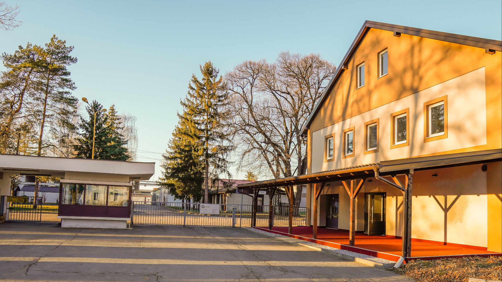
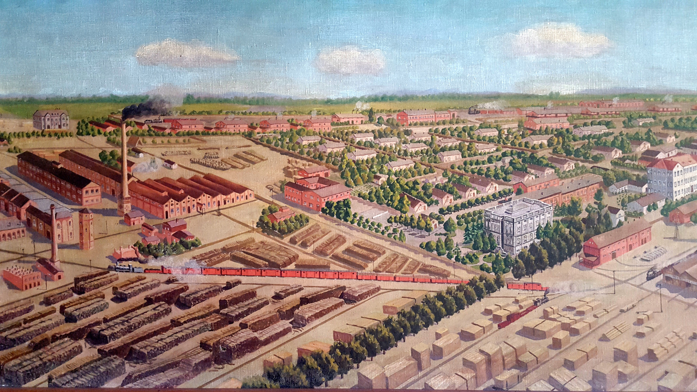
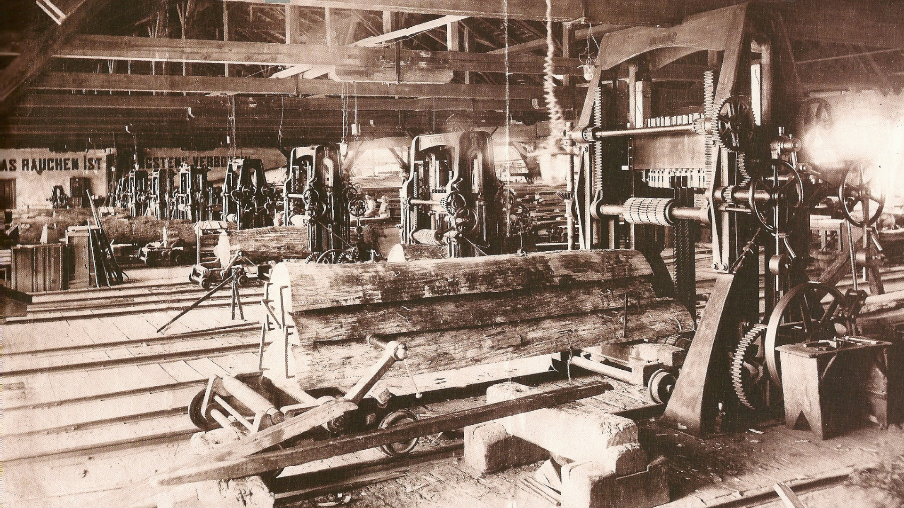

Sobe Industrial Belišće
Sobe Industrial Belišće utemeljene su 2022. godine. Odlikujemo se vrhunskim sobama i uslugama. Interijer zgrade ima sobe sa modernim namještajem, krevetima i kupatilima vrhunske kvalitete. Sama zgrada Industriala ima bogatu povijest i baštinu iza sebe. Nekada davno zgrada je bila vatrogasno spremište, a nakon toga skladiše.
Uz zgradu Soba Industrial Belišće, koja ima bogatu povijest i modernim interijerom, sama zgrada predstavlja savršen spoj staroga sa novim.
Povijesne znamenitosti
Ovdje su navedene znamenitosti grada Belišća koje su u blizini smještaja.
Palača Gutmann
Palača Gutmann prva je zgrada pored Soba Industrial Belišće te je najbliža povijesna znamenitost za posjetiti. Zgradu je dao sagraditi barun Edmund Gutmann 1905. godine i po njemu je ova zgrada dobila ime. Zgrada je također poznata poznata pod nadimkom "Palej". Monumentalnost, kojom odlikuje ova palača uz park, ulazi među najveća građevinska ostvarenja nastala početkom 20. stoljeća. Ova palača registrirana je kao spomenik kulture A kategorije, te je upisana u Registar nepokretnih spomnika kulture.

Za vrijeme I. svjetskog rata zgrada se koristila kao vojna bolnica. Za vrijeme Domovinskog rata, kao poslijedica napada na Belišće 3. siječnja 1992. godine, zgrada je teško oštećena. Također, tijekom rata podrum zgrade služio je kao skrovište, te kao arhiva i galerija. Zbog velikog oštećenja zgrada je i danas u procesu rekonstrukcije, međutim sačuvani su vanjski zidovi i podrum, koje se svakako isplati posjetiti.
Muzej Belišće
Nedaleko od Soba Industrial Belišće nalazi se zgrada Muzeja, u čuvenoj i povijesnoj ulici imenom "Pekmez ulica". Godine 2015. muzej je, zajedno sa pekmez ulicom u potpunosti obnovljen, te je na taj način dobivena nova turistička znamenitost. U zgradi Muzeja izloženi su objekti industrijske baštine grada, a također mogu se pogledati i ostali povijesni sadržaji iz kulturnih, društvenih i sportskih dijelova povijesti grada. Također, u muzeju mogu se pronaći i izložbe iz prapovijesnog vremena, sve od doba dinosaura, neolitika, brončanog doba do rimskog i turskog razdoblja.
Također, još jedna popularna znamenitost Muzeja Belišće su drvene skulpture, koje su izrađene u drugoj polovici prošloga stoljeća, a predstavljaju radnike Belišća iz toga vremena.
Gater spomen-obilježje
U istoj ulici Soba Industrial Belišće može se naći spomen-obilježje Gater (tzv. Jarmača), što je naziv za vrstu pile korištene početkom 1889. godine. Spomenik je bio jedan od prvih i najvećih Gatera tada u pilani Belišća.
